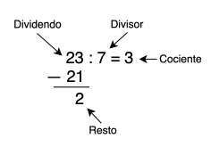

3. Polinomios con Coeficientes Reales#
3.1. Polinomios#
Un polinomio en la variable \(x\) y con coeficientes \(a_0, a_1, a_2, ..., a_n\) es una expresión del tipo:
\(\quad p(x) = \quad a_{n} \cdot X^{n} \quad+\quad a_{n-1} \cdot X^{n-1} \quad+\quad a_{n-2} \cdot X^{n-2} + \quad ... \quad + a_1 \cdot x \quad+\quad a_0\)
Con \(n\) un Número Entero no negativo (\(n\in\mathbb{Z^+}\)).
Ejemplo:
a) \(\quad p(x) = -10x^3 + 5x^2 - 3\)
\(a_4 = 0\)
\(a_3 = -10\)
\(a_2 = 5\)
\(a_1 = 0\)
\(a_0 = -3\)
b) \(\quad q(x) = -15x^4 - 3x^2 + \sqrt{3}x - 2\)
\(a_4 = 15\)
\(a_3 = 0\)
\(a_2 = -3\)
\(a_1 = \sqrt{3}\)
\(a_0 = -2\)
c) \(\quad r(x) = 5\)
\(a_0 = 5\)
No son Polinomios:
\(\frac{3}{x} - x^2 + 7 \quad=\quad 3x^-1 - x^2 + 7\)
\(\sqrt{x + 2} - x^3\)
\(\frac{4}{x^2 + 3x - 1} - \frac{5x - 2}{4x + 3}\)
3.1.1. Grado de un Polinomio#
Es el mayor exponente del término que contiene coeficiente no nulo (\(a \neq 0\)).
\(p(x) = 0 \cdot x^4 -10x^3 + 5x^2 - 3\)
\(\quad\rightarrow gr(p(x)) = 3\) (Grado 3)
\(q(x) = -15x^4 - 3x^2 + \sqrt{3}x - 2\)
\(\quad\rightarrow gr(q(x)) = 4\) (Grado 4)
\(r(x) = 5 \cdot x^0\)
\(\quad\rightarrow gr(r(x)) = 0\) (Grado 0)
\(s(x) = 0\)
Corresponde a un Polinomio Nulo (no tiene grado)
3.2. Álgebra de Polinomios#
Sean \(p(x)\) y \(q(x)\) Polinomios:
3.2.1. Suma:#
Se suman los términos semejantes.
Ejemplo: Calcule \(\quad p(x) + q(x)\)
\(p(x) = 3x^4 - 5x^2 - 4x - 2\)
\(q(x) = 4x^3 - 7x^2 + 5x + 3\)\(p(x) + q(x) \quad=\quad 3x^4 + 4x^3 - 12x^2 + x + 1\)
3.2.2. Multiplicación por Escalar:#
Se aplica la propiedad distributiva.
\(k\in\mathbb{R}\)
\(k \cdot p(x) = k \cdot (a_{n} \cdot X^{n} + a_{n-1} \cdot X^{n-1} + a_{n-2} \cdot X^{n-2} + \quad ... \quad + a_1 \cdot x + a_0)\)
\(k \cdot p(x) = k \cdot a_{n} \cdot X^{n} + k \cdot a_{n-1} \cdot X^{n-1} + k \cdot a_{n-2} \cdot X^{n-2} + \quad ... \quad + k \cdot a_1 \cdot x + k \cdot a_0\)
Ejemplo: Calcule \(\quad 3 \cdot p(x)\),\(\quad\) si \(p(x) = 3x^4 - 5x^2 - 4x - 2\)
\(3 \cdot p(x) = 3 \cdot (3x^4 - 5x^2 - 4x - 2)\)
\(3 \cdot p(x) = 9x^4 - 15x^2 - 12x - 6\)
3.2.3. Multiplicación entre Polinomios:#
Se aplica la propiedad distributiva y luego se suman los términos semejantes.
Ejemplo: Calcule \(\quad p(x) \cdot q(x)\)
\(p(x) = x^2 - 3x + 2\)
\(q(x) = 2x - 3\)\(p(x) \cdot q(x) \quad=\quad (x^2 - 3x + 2)\cdot(2x - 3)\)
\(p(x) \cdot q(x) \quad=\quad 2x^3 - 3x^2 - 6x^2 + 9x + 4x - 6\)
\(p(x) \cdot q(x) \quad=\quad 2x^3 - 9x^2 + 13x - 6\)
3.2.4. División de Polinomios#
3.2.4.1. Algoritmo de la División#
 [Fig. Ejemplo de Algoritmo de la División]\(\quad p(x) \div q(x) = c(x)\)
\(\quad r(x)\)
\(p(x)\) y \(q(x)\) son Polinomios, \(c(x)\) es el Cociente y \(r(x)\) es el Resto.
Ejemplos:
a) Encuentre el cociente y resto de dividir \(\quad x^3 - 3x^2 + 5x - 2\quad\) con \(\quad x^2 - 2x - 1\)
3.2.4.2. Divisibilidad de Polinomios#
3.2.4.3. División Sintética (Regla de Ruffini)#
Es una técnica que se utiliza para dividir un Polinomio por otro Polinomio de la forma \((x - c)\).
\(p(x) = a_n \cdot X^{n} + a_{n-1} \cdot X^{n-1} + a_{n-2} \cdot X^{n-2} + \quad ... \quad + a_1 \cdot X + a_0\)
\(q(x) = x - c\)